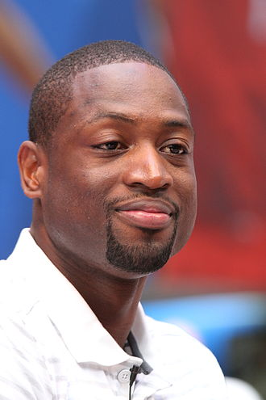

DWYANE WADE

Dwyane Tyrone Wade Jr. is an American former professional basketball player.
Wade spent the majority of his 16-year career playing for Miami Heat of the National Basketball Association.
Born: 17 January 1982 (age 39 years), Chicago, Illinois, United States
Height: 1.93 m
Children: Zaya Wade, Zaire Blessing Dwyane Wade, Kaavia James Union Wade, Xavier Zechariah Wade
Spouse: Gabrielle Union (m. 2014), Siohvaughn Funches (m. 2002–2010)
Number: 3 (Miami Heat / Shooting guard), MORE
Parents: Dwyane Wade Sr., Jolinda Wade
Siblings: Tragil Wade, Kodhmus McDaniel, Darnell McDaniel, Demetris McDaniel, Deanna Wade